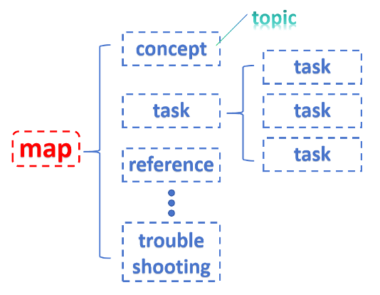
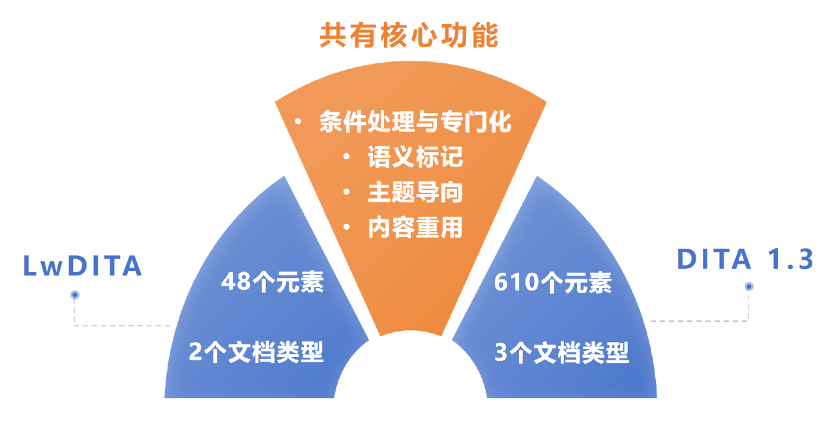

轻量级DITA#
数字化时代，技术文档的编写和管理愈发重要。通常，技术文档工程师会运用XML/DITA及相关工具进行技术文档的创作、管理和交付。DITA（Darwin Information Typing Architecture）是基于XML的体系结构，其单一源内容可以通过不同的方式，对各个模块进行重用，生成多样的交付内容，显著提高了技术文档的重用性和可维护性。除此之外，DITA还支持主题化的信息创建方法，其中一个topic（主题）可以分为concept（概念）、task（任务）、reference（参考），和troubleshooting（故障处理）等多种基本类型，再通过类似于思维导图的map将各个topic组织形成完整的文档（详见图1），使得文档的开发任务可以很方便地分解到各个文档编写人员手中，最终组合生成格式统一、内容规范的文档。

然而，传统的DITA结构相对复杂，对于一些小型项目或团队而言，使用起来可能有些繁琐。同时，产品工程师、市场营销人员、经理等人员可能并不熟悉DITA，难以进行内容输出，所有重担都落在了文档工程师身上。在这种情况下，如何让那些不使用XML的公司员工也能参与内容创作，同时又不失去结构化文档的能力呢？此时，轻量级DITA（Lightweight DITA）应运而生，成为技术文档领域的一颗新星。
轻量级DITA（LwDITA）是DITA（Darwin Information Typing Architecture）的精简版本。通过全方位简化传统DITA，LwDITA满足了更广泛的用户需求和应用场景，旨在使内容的创建和管理更为高效。
背景#
要理解LwDITA，首先需要了解DITA的基础概念：
DITA简介：DITA全称为Darwin Information Typing Architecture（达尔文信息分类体系结构），是一种模块化内容创作框架。DITA通过将内容分解为可复用的模块（topics）并结合“思维导图”式的map文件实现内容的高效整合和多样化应用。
传统DITA的挑战：DITA的文档结构复杂且学习成本高，对非技术文档工程师（如市场营销人员或经理）不够友好，导致内容创作责任主要集中在文档工程师身上。
轻量级DITA的出现旨在降低DITA的使用门槛，使更多非技术人员也能够轻松参与内容创作。
核心特点#
LwDITA通过以下特点实现了DITA的简化：
简化元素类型、文档类型、属性集#
LwDITA减少了元素种类，例如：
LwDITA包含48种元素，而DITA 1.3包含610种元素。
示例：LwDITA简化了title相关元素，将复杂的多种分类精简为统一的title标记。
LwDITA保留了topic和map两种文档类型，移除了复杂的database文档类型，更适合小型企业和非技术用户的使用需求。
LwDITA仅保留了最核心的属性集，删除了复杂的功能。例如，LwDITA支持id和conref属性，而DITA 1.3中额外支持conkeyref等高级功能。

严格内容模型#
LwDITA通过减少元素和引入严格规则实现更严谨的内容模型。例如：
所有文本必须位于paragraph元素内。
内容类型的标记更加清晰，提升了内容的重用效率和精确度。
新增多媒体元素#
为了支持更广泛的用户群体，LwDITA新增了9项多媒体相关元素（如Audio、Video、Source等），支持音频和视频内容的创作。
支持非XML格式#
LwDITA支持以下三种创作格式：
XDITA：基于XML的变体。
HDITA：基于HTML5的变体。
MDITA：基于Markdown的变体。
这种多格式支持让非技术用户（如销售人员或博主）可以使用熟悉的工具参与内容创作，并通过简单的转换实现文档发布。
应用优势#
LwDITA通过简化功能和支持多种创作格式，让更多非技术人员能够参与内容创作。
不同部门间的人员能够协同创作，提高知识共享和信息传递的效率。
LwDITA具有较高的灵活性，能够随着技术发展和用户需求的变化持续改进。
总结与展望#
LwDITA通过简化DITA的复杂性和提升使用便捷性，为文档创作带来了革新。未来，LwDITA可能会进一步利用新技术（如人工智能、虚拟现实）优化用户体验，并在远程协作和多媒体内容创作中发挥更大作用。
展望#
随着数字时代的到来，LwDITA不仅是一种工具，更是一种推动知识共享和团队协作的文化。它将继续塑造高效、便捷、包容的文档生态，为用户研究和内容创作带来更多机遇。